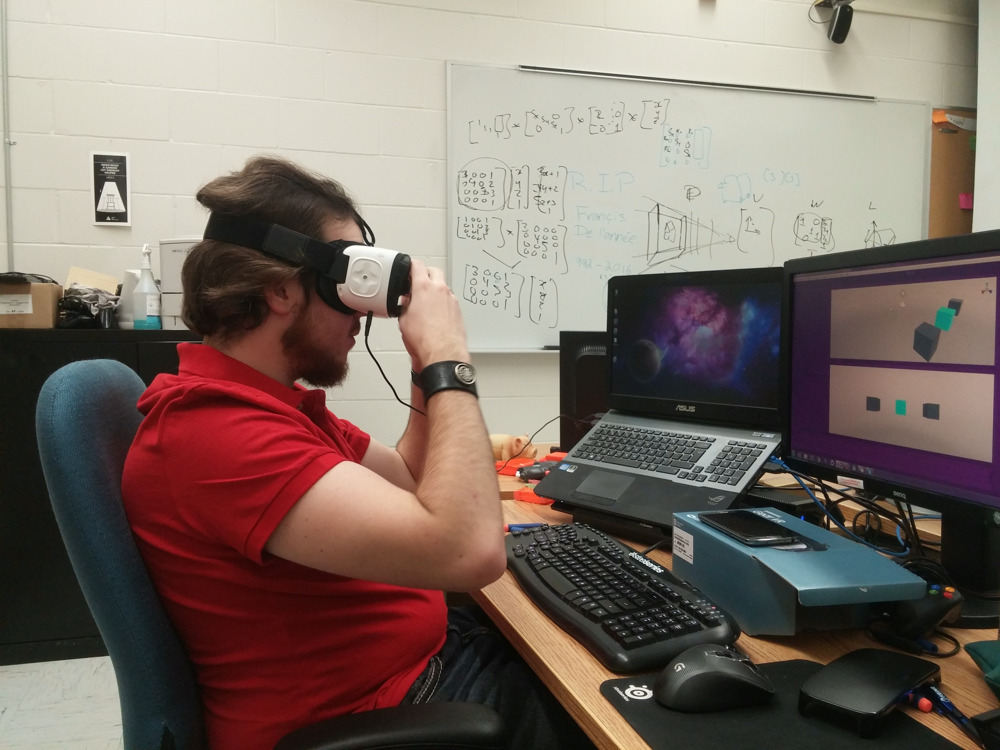
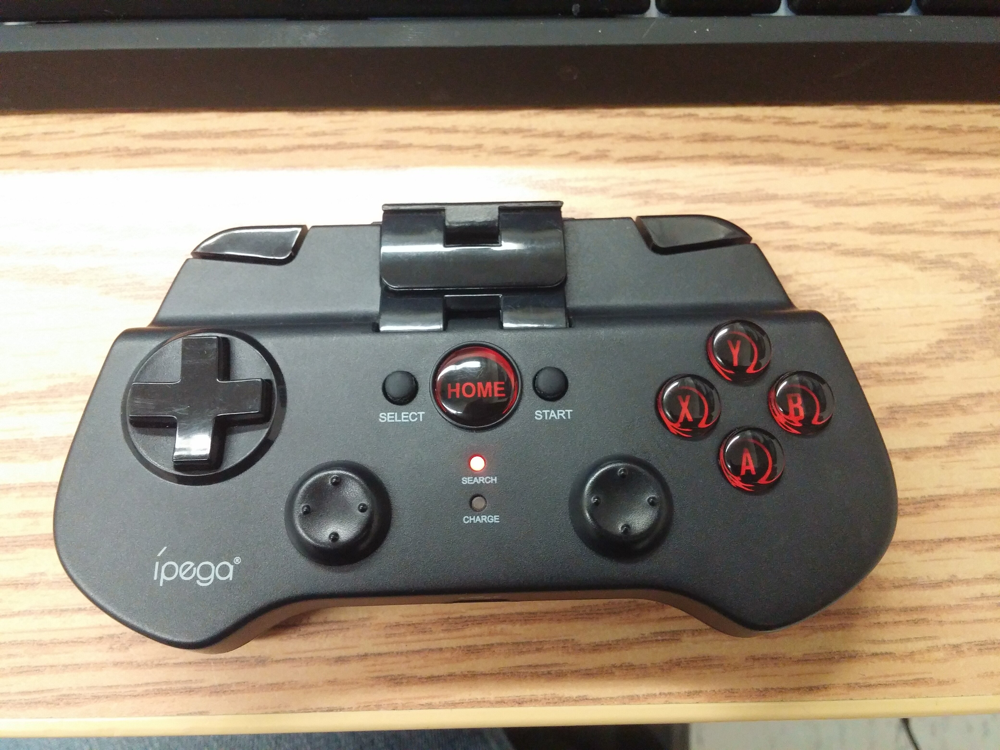
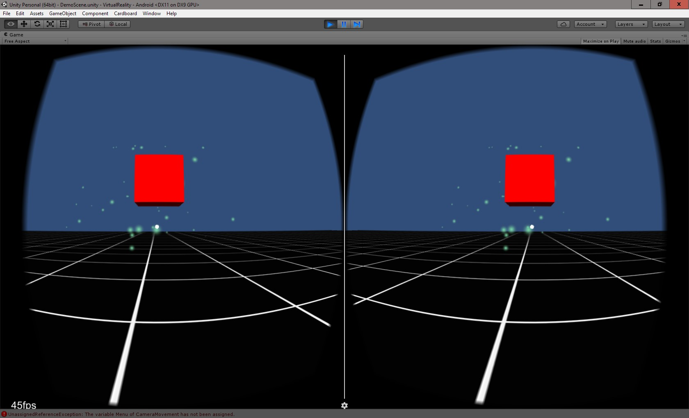

Absence de Francis
L’absence inattendue de Francis ce matin risque de retarder un peu l’avancement du prototype au niveau Oculus, puisqu’il est disparu avec le Samsung Gear VR. Cependant, de mon côté je peux tout de même d’avancer avec le Cardboard afin d’avoir un prototype plus ou moins terminé d’ici la fin de la journée. La transposition avec la technologie Oculus devrait assez bien se faire avec Unity.
Update de 11h00: Francis est arrivé, Oculus pourra être testé aujourd’hui si tout se passe bien.

Tests avec le contrôleur Bluetooth Ipega
Ce matin, j’ai enfin pu utiliser le contrôleur Bluetooth Ipega qui traine sur mon bureau depuis une semaine. Comme toujours, Unity s’occupe très bien de rendre la technologie accessible, puisqu’au niveau développement le fonctionnement est le même qu’avec un contrôleur d’Xbox 360, ce que nous avons amplement utilisé la session dernière.

L’acquisition de ce contrôleur permettra une plus grande diversité au niveau du prototype, puisque le Cardboard est muni d’un seul bouton, ce qui limite énormément les interactions possibles.
Avancement du premier prototype Cardboard
Maintenant que les contrôles sont implémentés, le développement du prototype peut continuer. La caméra peut se déplacer à l’aide du joystick, légèrement similaire au déplacement d’un vaisseau spatial. Il est également possible d’ajuster la vitesse de déplacer, et d’utiliser le menu directement à l’aide de la manette.
Avec ces changements, l’application n’est maintenant plus dépendante de l’aimant du Cardboard, ce qui la rend utilisable avec d’autres casques de VR ne le possédant pas. Cependant, l’utilisation d’un contrôleur Bluetooth est maintenant nécessaire.

Tentative de premier prototype avec Oculus
Le déploiement d’un projet sur le téléphone est plus ardue qu’avec le Cardboard, ce qui retarde encore plus le premier prototype. L’essai du prototype sera donc remis à demain.